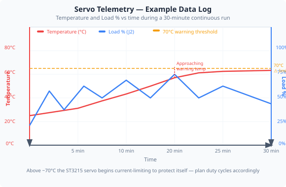
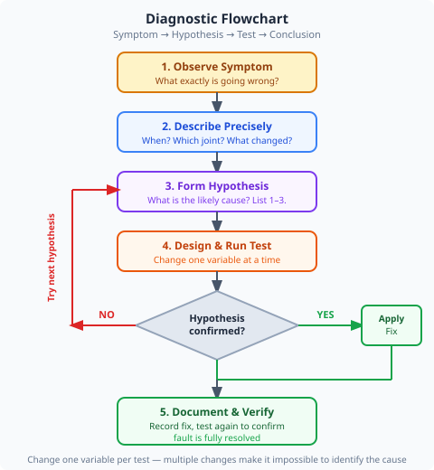

Capturing, interpreting, and using live data from the robot arm to monitor health and diagnose faults.

A robot arm in operation generates a continuous stream of sensor data — joint positions, temperatures, supply voltages, and load readings. Capturing this data over time is called data logging. Engineers use logged data to:
Spot gradual drift or degradation before failure occurs.
Replay events leading up to a fault to find the root cause.
Confirm the arm meets speed and accuracy specifications.
In safety-critical systems (ISO 10218), logs are a legal requirement — they prove the system operated within defined limits.
The ST3215 servos used in this arm report several parameters over the serial bus. The app reads these and displays them in real time:
| Parameter | Units | What it tells you |
|---|---|---|
| Position | degrees (°) | Current joint angle — compare to commanded angle to check accuracy |
| Velocity | rpm | How fast the joint is moving — high values near limits risk overshoot |
| Load | % of stall torque | Mechanical load on the motor — sustained high load = overheating risk |
| Voltage | V | Supply rail health — drop under load indicates wiring or PSU issues |
| Temperature | °C | Motor winding temperature — above ~70 °C the servo will self-limit |

Good diagnostics follow a structured process — not guesswork. A common framework is Symptom → Hypothesis → Test → Conclusion.
| Symptom | Possible causes | Test |
|---|---|---|
| Joint overshoots target | Speed too high, PID gains wrong | Reduce speed, observe position trace |
| Temperature rising fast | Sustained high load, poor ventilation | Check load %, reduce payload |
| Voltage drops under move | PSU current-limited, thin wiring | Measure V at servo headers during move |
| Position error accumulates | Backlash, encoder slipping | Command same pose 10×, log final position |
| WebSocket disconnects | Network jitter, Pi overloaded | Check Pi CPU usage, ping latency |
You will observe live servo telemetry while the arm performs a repeating motion, and record what you see.
| Condition | Joint 2 Load % | Voltage (V) | Temperature (°C) |
|---|---|---|---|
| Idle / home | |||
| Moving 0°→60° (no load) | |||
| Moving with manual load | |||
| After 5 min continuous |
Industrial robots in factories run 24/7. A sudden failure mid-cycle can damage tooling, injure workers, or halt an entire production line. Predictive maintenance uses logged data — temperature trends, vibration signatures, load drift — to schedule servicing before failure, not after.
The techniques you practised here (monitoring load, watching temperature, noting voltage sag) are the same principles behind industrial SCADA (Supervisory Control and Data Acquisition) systems, just at a smaller scale.
Think about: If you were deploying this arm in a school workshop that runs 6 hours a day, what logging strategy would you design? What thresholds would you alarm on?
1. A servo's load reading is described as a proxy for which electrical quantity?
2. Which diagnostic approach is most structured?
3. A servo's temperature rises steadily over 30 minutes of continuous operation. The most likely first action is: